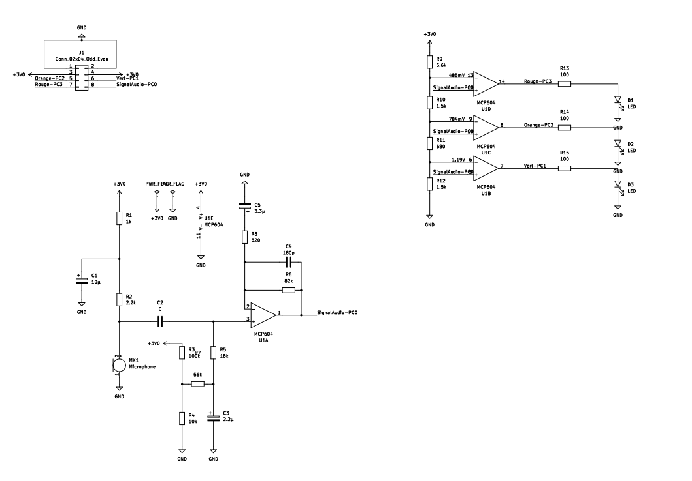
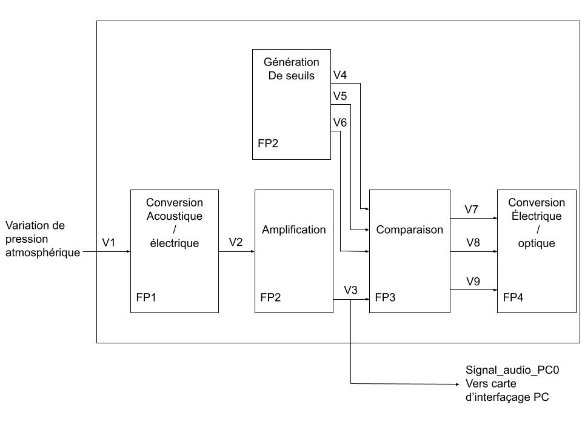
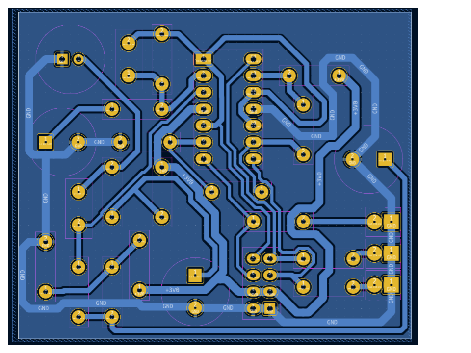
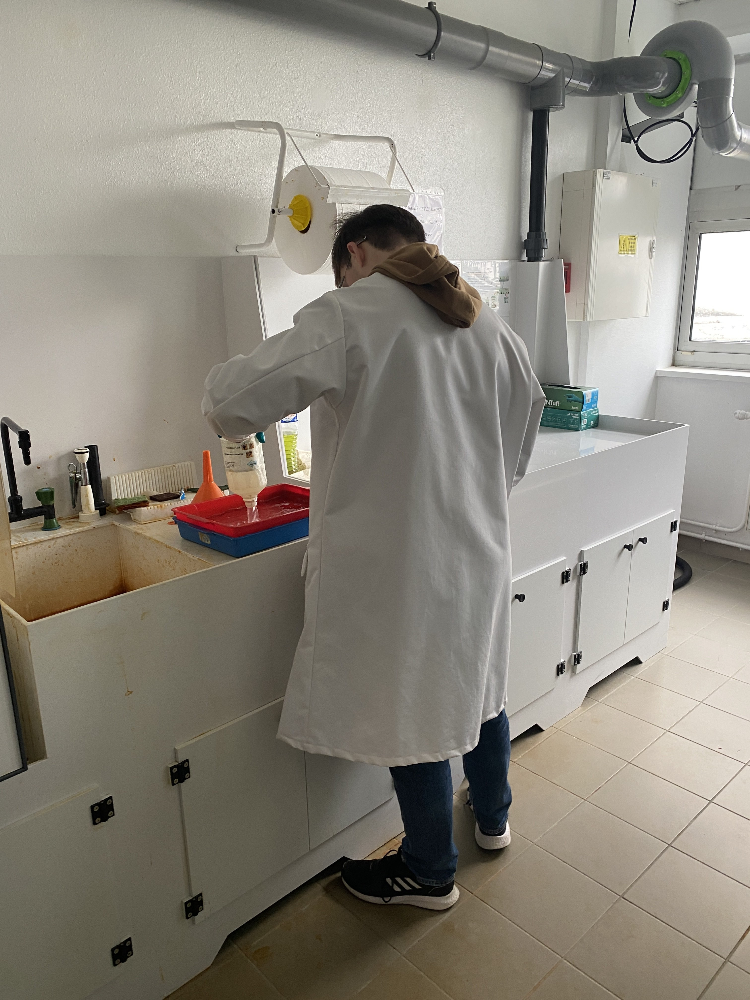
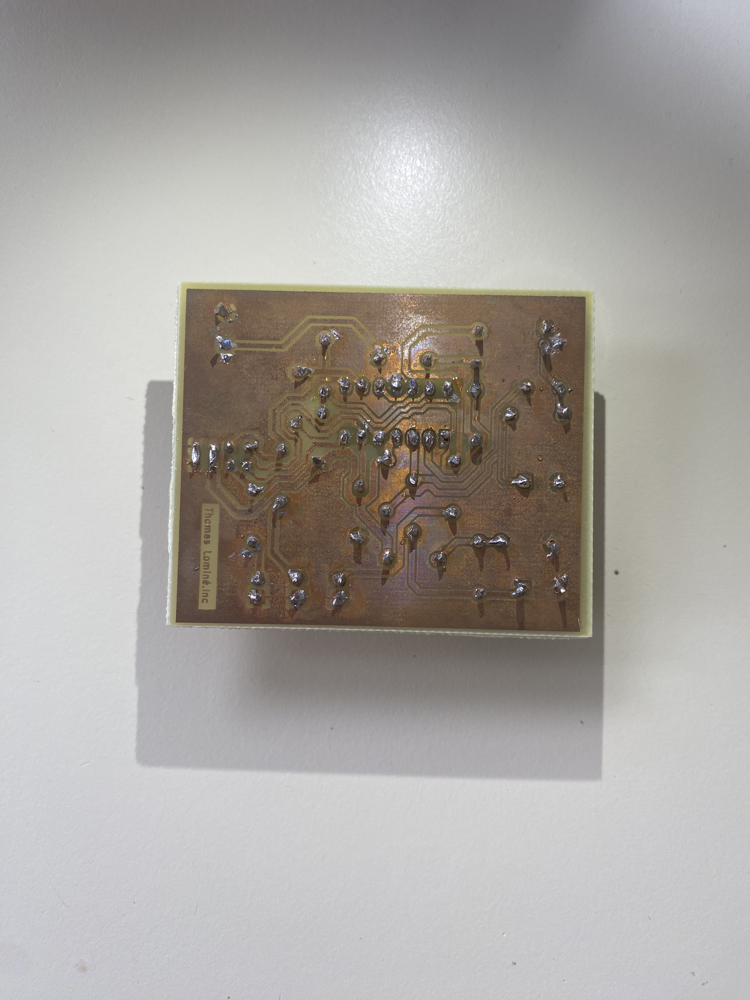
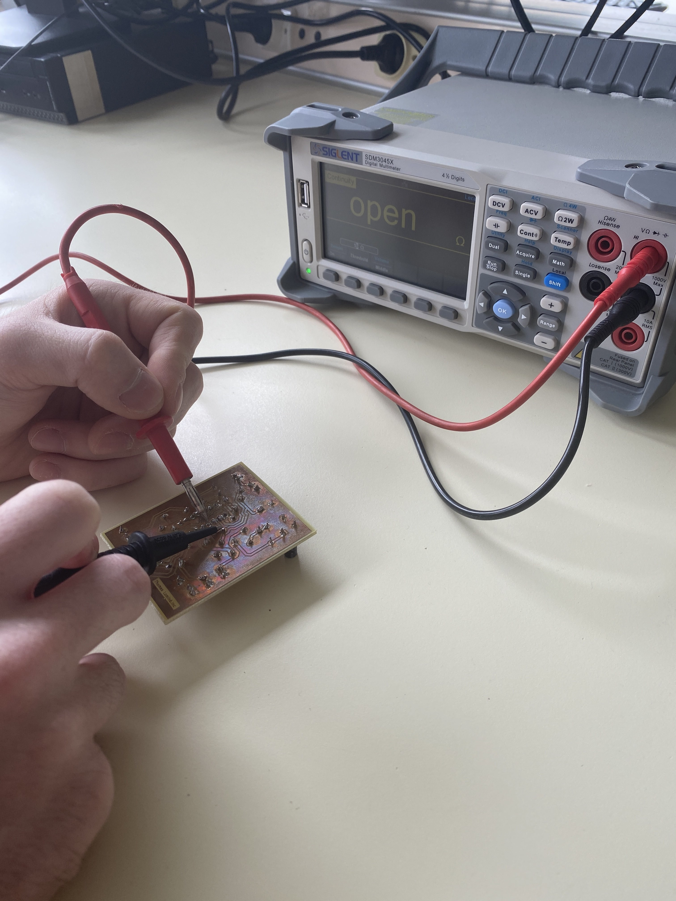
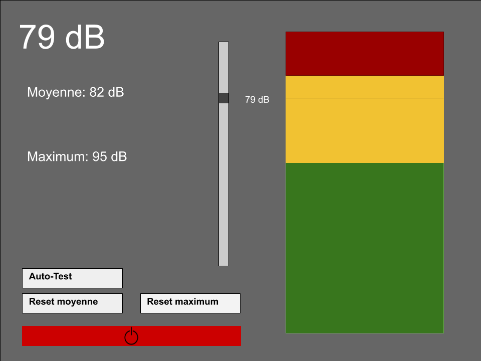
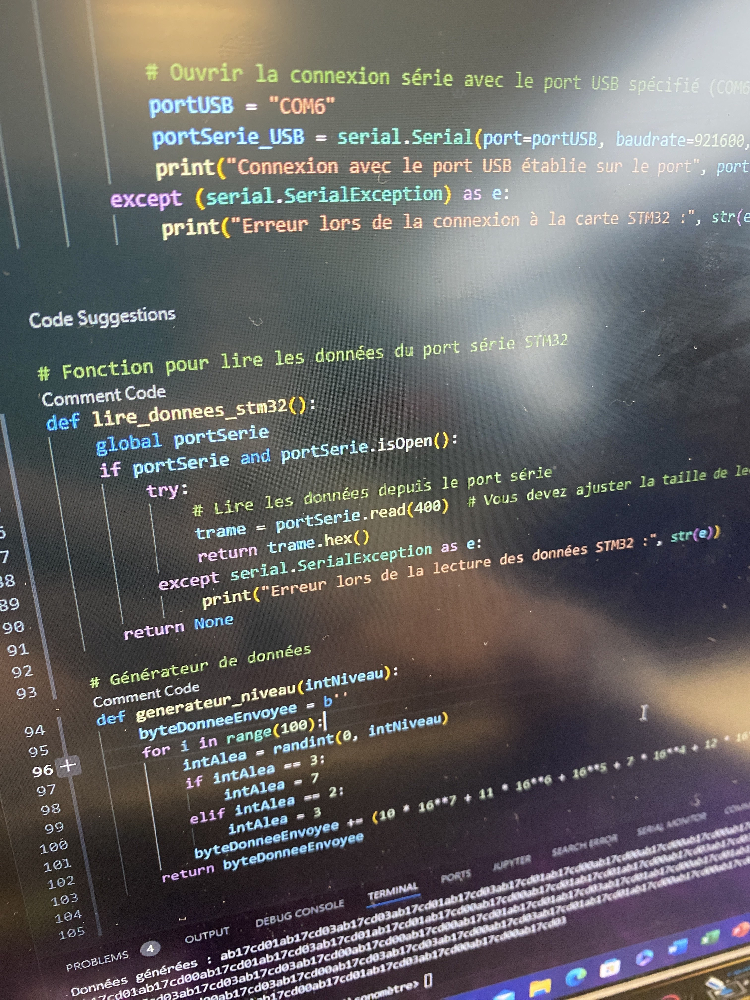
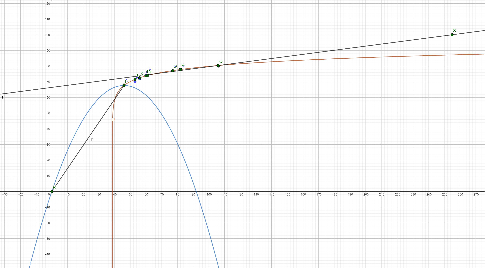
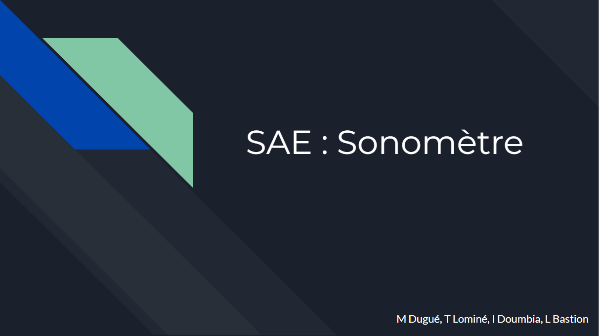

L'objectif de cette SAE est de concevoir un sonomètre et une interface utilisateur en Python pour afficher de manière plus claire les informations mesurées par le sonomètre. Pour ce faire, nous avons suivi plusieurs étapes précises pour la création du sonomètre, qui utilise des LED vertes, jaunes et rouges pour indiquer le niveau de bruit. En parallèle, nous avons travaillé sur la conception de l'interface utilisateur.
| Tâche à réaliser | Ressources utilisées | Traces | Autoévaluation |
|---|---|---|---|
| Compréhension du circuit du sonomètre L'objectif de cette première étape de comprendre comment fonctionne le circuit du sonomètre fournis en amont pour pouvoir ensuite mieux réalisé les étapes qui suivent. |
Pédagogique : Cours Electronique (M.Cordeau) |
  |
9/10
Cette partie fut assez simple et intéressante, car j'avais déjà brièvement étudié des circuits similaires. |
| Routage du circuit Cette étape est cruciale pour connecter correctement les composants électroniques sur la carte, en respectant les contraintes d'espace. |
Logiciel : Kicad
Pédagogique : Cours sur Kikad du 1er semestre (M.Christophe Guitton) |
 |
7/10
Le routage fut plus compliqué pour moi, cependant, j'ai réussi à obtenir un résultat que je juge satisfaisant. |
| Fabrication de la carte Cette étape consiste à reporter le routage précédemment fait sur une carte de cuivre. Pour ce faire, on utilise une imprimante à rayon ultraviolet et des produits chimiques afin de créer le pcb. |
Matériels : imprimante, révélateur...
Pédagogique : Formation à la création d'un PCP + Fiche procédure pour la création du PCP |
 |
10/10
La fabrication de la carte n'a posé aucune difficulté particulière. |
| Soudure des composants
Cette étape est nécessaire dans la création d'un pcb fonctionnelle. En effet, il ne suffit pas de poser les composants sur la carte pour que ça fonctionne, mais il faut aussi les souder. |
Matériels : fer à souder et perceuse
Pédagogique : Cours de soudure sur une carte d'entrainement Documentation : Schéma du circuit |
 |
10/10
La soudure des composants ne m'a posé aucun problème. |
| Débogage de la carte
Le débogage de la carte électronique est une étape cruciale pour détecter et résoudre les problèmes et les erreurs. Il est effectué à l'aide d'un multimètre capable de mesurer la continuité électrique, ce qui permet de vérifier les connexions et les circuits de la carte. |
Matériels : Fiche de continuité, multimètre
Documentation : Schéma électrique du sonomètre |
 |
10/10
La carte à fonctionner du second coup donc je n'ai debogger que très peu. |
| Dessin d'une première interface Pour créer une interface utilisateur, il faut d'abord concevoir son design en utilisant un logiciel dédié. Ce prototype visuel permet de définir l'agencement des éléments et les couleurs à utiliser. Ensuite, on peut implémenter l'interface avec un langage de programmation adapté. |
Logiciel : Google Drawing |
 |
10/10
L'interface ne fut pas compliquée à designer, avec les bons outils, le travail fut rapide. |
| Simulateur de trame avec son décodage pour connaitre le nombre de leds a allumer Cette étape permet de tester et de vérifier le fonctionnement du futur code de décodage, ainsi que d'identifier et de corriger les erreurs. C'est donc une étape importante pour garantir la fiabilité du code. |
Pédagogique : Cours en Python du Lycée et du premier semestre (M.Vergnerie)
Logiciel : Python |
 |
8/10
Simuler la trame me posa un peu de problème au début, mais j'ai très rapidement compris et j'ai su résoudre les problèmes. |
| Création du code Cette étape est l'une des plus importantes, elle permet de créer l'interface utilisateur. Pour ce faire, on utilise python et ses bibliothèques et le design préalablement fait pour pouvoir gagner du temps sur l'organisation des éléments. |
Pédagogique : Cours en Python du Lycée et du premier semestre (M.Vergnerie)
Logiciel : Python |
|
10/10
La création du code fut longue et fastidieuse, mais non avons réussi à obtenir un travail que nous jugeons très bon. |
| Débogage du code Cette étape est nécessaire pour le bon fonctionnement du code. En effet, le code peut sembler fonctionner de premier abord, mais il peut y avoir des bugs cachés, cette étape est là pour enlever les derniers bugs persistants. |
Pédagogique : Cours en Python du Lycée et du premier semestre (M.Vergnerie)
Logiciel : Python |
Non renseignée | 9/10
Le débogage du code fut rapide, car nous n'avons pas beaucoup de problèmes dans le code. |
| Tests pour trouver un lien entre la trame et le nombre de décibels Pour améliorer la précision du sonomètre, nous avons établi une relation entre la trame envoyée par la carte et les décibels. Cela nous permet de calculer le niveau sonore plus précisément. |
Pédagogique : Cours de maths (M.Vergnerie)
Logiciel : GeoGebra |
 |
8/10
La recherche du lien entre les décibels et la trame envoyé par le sonomètre fut compliquée du fait de l'inédit de cette tâche qui ne fut jamais réalisé au paravent. |
| Créer un mode d'emploi pour l'utilisation du sonomètre Cette étape est cruciale si nous voulons partager notre interface utilisateur avec d'autres personnes, car elle fournit des instructions claires et précises sur la façon de l'utiliser correctement, évitant ainsi toute confusion ou erreur. |
Logiciel : Google Docs | 10/10
La création du mode d'emploi ne fut pas compliquée étant donné que j'ai déjà eu l'occasion d'en réaliser dans le passé. |
|
| Oral de soutenance Pour présenter notre projet SAE à nos professeurs, nous avons créé un diaporama qui résume les étapes clés de la conception du sonomètre et de son interface graphique. |
Logiciel : Google Slide |
 |
10/10
Étant donné que je suis à l'aise à l'oral, cette tâche ne fut pas compliqué pour moi. |
| ANALYSE PERSONNELLE | |||
| Cette SAE a été l'un de mes premiers projets importants et j'ai beaucoup apprécié la diversité des tâches à accomplir. Cependant, je n'ai pas trouvé la partie de routage de la carte très intéressante et j'aurais aimé avoir une plus grande partie sur la conception du circuit. Néanmoins, j'ai beaucoup apprécié la partie autonomie du projet, elle nous a permis de comprendre comment fonctionner les travaux de groupe, mais aussi elle nous a donné une certaine liberté sur la conception de l'interface utilisateur. Malgré cela, je suis très satisfait de ce projet car il m'a permis de développer mes compétences techniques et de renforcer mon esprit d'équipe. | |||